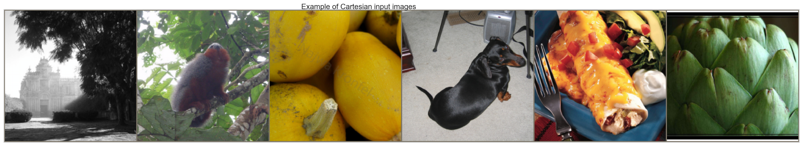
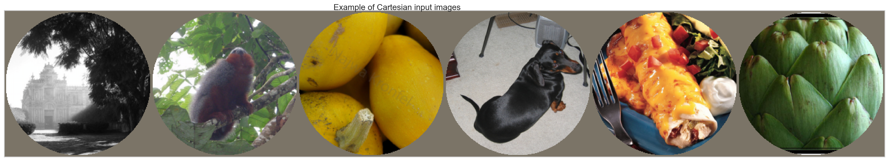
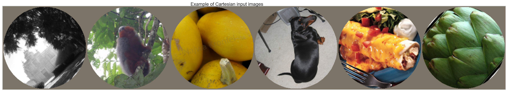
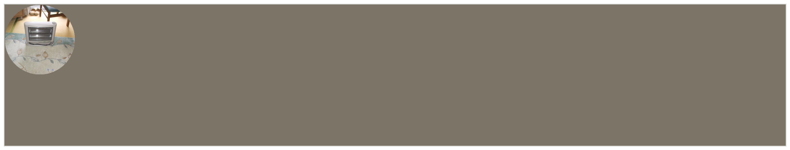
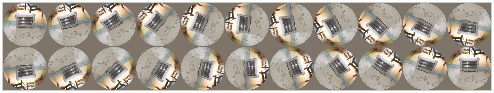
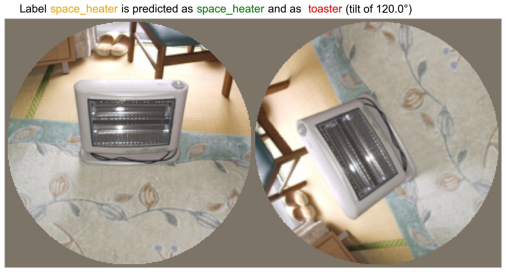

This notebook provides a visual exploration of the rotation attack process. We display sample images from the validation set and visualize how they are transformed by rotations and masking before being fed into the network.
displaying sample images¶
[1]:
import retinoto_py as fovea
N_show = 6
args = fovea.Params(batch_size=N_show, do_mask=False, do_fovea=False, do_augment=False, verbose=True)
args
Welcome on macOS-26.4.1-arm64-arm-64bit-Mach-O - Timestamp (UTC) 2026-05-07_08-56-44 user laurent > pytorch==2.11.0
> device (Apple Silicon/MacOS) - macos_version = 26.4.1
Random seed 1998 has been set.
[1]:
Params(batch_size=6, num_workers=0, prefetch_factor=0, image_size=224, grid_size_ecc=161, grid_size_ang=309, do_mask=False, do_fovea=False, use_hexagonal_grid=True, rs_min=-3.5, rs_max=0.7, angle_start=-5.235987755982989, angle_margin=0.010166966516471823, mode='bilinear', padding_mode='zeros', model_name='convnext_base', num_epochs=340, subset_factor=1, optimizer_name='adamw', loss_name='CrossEntropyLoss', base_lr=1e-06, final_lr=1e-09, num_warmup_epochs=20, delta1=0.3, delta2=0.002, weight_decay=0.0001, label_smoothing=0.0005, do_full_training=True, do_augment=False, augment_proba=0.85, stochastic_depth_prob=0.6, seed=1998, shuffle=True, verbose=True)
[ ]:
# VAL_DATA_DIR = args.DATAROOT / 'Imagenet_full' / 'val'
# # VAL_DATA_DIR = args.DATAROOT / 'Imagenet_bbox' / 'val'
# val_dataset = fovea.get_dataset(args, VAL_DATA_DIR)
# val_loader = fovea.get_loader(args, val_dataset)
val_loader = fovea.get_val_loader(args, dataset)
[ ]:
# print(VAL_DATA_DIR)
/Users/laurent/data/Imagenet/Imagenet_full/val
[4]:
images, labels = next(iter(val_loader))
images, labels = images.to('cpu'), labels.to('cpu')
[5]:
fig, ax = fovea.imshow(images, title='Example of Cartesian input images', fig_height=5)
fovea.plt.show()

displaying sample images with a mask¶
[6]:
args = fovea.Params(batch_size=N_show, do_mask=True, do_augment=False, do_fovea=False)
val_dataset = fovea.get_dataset(args, VAL_DATA_DIR)
val_loader = fovea.get_loader(args, val_dataset)
images, labels = next(iter(val_loader))
images, labels = images.to('cpu'), labels.to('cpu')
fig, ax = fovea.imshow(images, title='Example of Cartesian input images', fig_height=5)
fovea.plt.show()

displaying sample images with a mask and a rotation¶
[7]:
args = fovea.Params(batch_size=N_show, do_mask=True, do_augment=False, do_fovea=False)
val_dataset = fovea.get_dataset(args, VAL_DATA_DIR, angle_min=40, angle_max=50)
val_loader = fovea.get_loader(args, val_dataset)
images, labels = next(iter(val_loader))
images, labels = images.to('cpu'), labels.to('cpu')
fig, ax = fovea.imshow(images, title='Example of Cartesian input images', fig_height=5)
fovea.plt.show()

testing one image at different rotations¶
[8]:
seed = 1998
args = fovea.Params(batch_size=1, do_mask=True, do_fovea=False, do_augment=False, shuffle=True, seed=seed, verbose=False)
val_dataset = fovea.get_dataset(args, VAL_DATA_DIR)
val_loader = fovea.get_loader(args, val_dataset)
model = fovea.load_model(args)
model.eval()
for _ in range(81+1):
images, true_idxs = next(iter(val_loader))
images = images.to(args.device)
true_idxs = true_idxs.to(args.device)
images.shape, true_idxs
[8]:
(torch.Size([1, 3, 224, 224]), tensor([811], device='mps:0'))
[9]:
all_angles = fovea.np.linspace(0, 360, 22)
[10]:
all_image_tensors = []
mask = fovea.make_mask(args.image_size).to(args.device)
for _, angle in enumerate(all_angles):
if _==0:
all_image_tensors.append(images * mask)
else:
all_image_tensors.append(images[:, 0, 0] * fovea.torch.ones_like(images))
all_images = fovea.torch.cat(all_image_tensors, dim=0)
all_images.shape
[10]:
torch.Size([22, 3, 224, 224])
[11]:
fig, ax = fovea.imshow(all_images.cpu(), fig_height=5)
fovea.savefig(fig, name='16_rotation_attack_sample_rotations_zero', figures_folder=args.figures_folder, exts=['png'])

[12]:
all_image_tensors = []
all_label_tensors = []
from torchvision.transforms import InterpolationMode
for angle in all_angles:
image_rot = fovea.TF.rotate(images, angle, interpolation=InterpolationMode.BILINEAR) * mask
# Append the batch of rotated images and their corresponding labels
all_image_tensors.append(image_rot)
all_label_tensors.append(true_idxs) # Append the full label tensor
# --- AFTER THE LOOP: Concatenate everything at once ---
# This is the efficient way!
all_images = fovea.torch.cat(all_image_tensors, dim=0)
all_labels = fovea.torch.cat(all_label_tensors, dim=0)
all_images.shape, all_labels.shape
[12]:
(torch.Size([22, 3, 224, 224]), torch.Size([22]))
[13]:
fig, ax = fovea.imshow(all_images.cpu(), fig_height=5)
fovea.savefig(fig, name='16_rotation_attack_sample_rotations', figures_folder=args.figures_folder, exts=['png'])

[14]:
criterion = fovea.torch.nn.CrossEntropyLoss(reduction='none')
with fovea.torch.no_grad():
outputs = model(all_images)
loss = criterion(outputs, all_labels).cpu().numpy()
logits = outputs.cpu().numpy()
_, predicted_labels = fovea.torch.max(outputs, dim=1)
correct_predictions_in_batch = (predicted_labels == all_labels)
predicted_labels, all_labels
[14]:
(tensor([811, 811, 811, 811, 811, 811, 859, 859, 811, 811, 811, 811, 811, 811, 811, 811, 811, 811, 811, 811, 811, 811], device='mps:0'),
tensor([811, 811, 811, 811, 811, 811, 811, 811, 811, 811, 811, 811, 811, 811, 811, 811, 811, 811, 811, 811, 811, 811], device='mps:0'))
[15]:
correct_predictions_in_batch, loss
[15]:
(tensor([ True, True, True, True, True, True, False, False, True, True, True, True, True, True, True, True, True, True, True,
True, True, True], device='mps:0'),
array([0.36419195, 0.61401767, 0.58199644, 0.566515 , 0.8411059 ,
1.2465312 , 2.0649595 , 2.4468641 , 0.65303785, 0.7409282 ,
0.66105956, 0.8728539 , 0.5484808 , 0.67440784, 1.2773129 ,
0.8200281 , 1.0153265 , 0.6952434 , 0.46669754, 0.47398546,
0.51274526, 0.36419195], dtype=float32))
[16]:
worst_angle = loss.argmax()
worst_angle, predicted_labels[worst_angle]
[16]:
(np.int64(7), tensor(859, device='mps:0'))
[17]:
idx_to_label = fovea.get_idx_to_label(args)
idx_to_label[predicted_labels[worst_angle]], idx_to_label[all_labels[worst_angle]]
[17]:
('toaster', 'space_heater')
[18]:
all_images[[0, worst_angle], ...].shape
[18]:
torch.Size([2, 3, 224, 224])
[19]:
fig_height = 8
def make_title(fig, ax, A, B, C):
# We position text relative to the FIGURE (0-1), not the axes.
# This avoids transform complexities.
transform = fig.transFigure
text_segments = [
("Label", 'black'),
(f"{A}", 'orange'),
("is predicted as", 'black'),
(f"{B}", 'green'),
("and as ", 'black'),
(f"{C}", 'red'),
(f"(tilt of {all_angles[worst_angle]:.1f}°)", 'black',),
]
# Position the title block relative to the figure's width
x_pos = 0.21 # Start 5% from the left edge of the figure
y_pos = 0.99 # Start 97% from the bottom of the figure
font_size = ax.title.get_fontsize() #or plt.rcParams['font.size'] # Get title font size
for segment, color in text_segments:
text_obj = fig.text(x_pos, y_pos, segment, color=color, transform=transform,
fontsize=font_size, va='top', ha='left')
# Draw the canvas to ensure the bbox is accurate
fig.canvas.draw()
bbox = text_obj.get_window_extent()
# The spacing is now just the width of the text in figure coordinates
x_pos = (bbox.x1 - fig.bbox.x0) / fig.bbox.width + 0.005 # Add a small space
return fig, ax
fig, ax = fovea.imshow(all_images[[0, worst_angle], ...].cpu(), title=None, fig_height=fig_height)
fig, ax = make_title(fig, ax, idx_to_label[all_labels[0]], idx_to_label[predicted_labels[0]], idx_to_label[predicted_labels[worst_angle]])
fovea.savefig(fig, name='16_attack', figures_folder=args.figures_folder, exts=['png'])

[20]:
def one_rotation_attack(image, true_idx, all_angles=all_angles, fig_height = 6):
all_image_tensors = []
all_label_tensors = []
for angle in all_angles:
image_rot = fovea.TF.rotate(image, angle, interpolation=InterpolationMode.BILINEAR) * mask
all_image_tensors.append(image_rot)
all_label_tensors.append(true_idx) # Append the full label tensor
all_images = fovea.torch.cat(all_image_tensors, dim=0)
all_labels = fovea.torch.cat(all_label_tensors, dim=0)
with fovea.torch.no_grad():
outputs = model(all_images)
loss = criterion(outputs, all_labels).cpu().numpy()
_, predicted_labels = fovea.torch.max(outputs, dim=1)
worst_angle = loss.argmax()
fig, ax = fovea.imshow(all_images[[0, worst_angle], ...].cpu(), title=None, fig_height=fig_height)
fig, ax = make_title(fig, ax,
idx_to_label[all_labels[0]], idx_to_label[predicted_labels[0]],
idx_to_label[predicted_labels[worst_angle]])
# fig.tight_layout()
return fig, ax
[21]:
n_images = 101
args = fovea.Params(batch_size=1, do_mask=True, do_fovea=False, do_augment=False, shuffle=True, seed=seed, verbose=True)
val_dataset = fovea.get_dataset(args, VAL_DATA_DIR,)
val_loader = fovea.get_loader(args, val_dataset)
model = fovea.load_model(args)
model.eval()
figures_folder = args.figures_folder / '16_attack'
figures_folder.mkdir(exist_ok=True)
for i_image in range(n_images):
image, true_idx = next(iter(val_loader))
image = image.to(args.device)
true_idx = true_idx.to(args.device)
fig, ax = one_rotation_attack(image, true_idx)
name = f'16_attack-{i_image}'
fovea.savefig(fig, name=name, figures_folder=args.figures_folder / '16_attack', exts=['png'])
fovea.plt.close() # will close the plot
print(f'Saved {name}', end='\t')
# if i_image >= n_images: break
Welcome on macOS-26.4.1-arm64-arm-64bit-Mach-O - Timestamp (UTC) 2026-05-07_08-56-47 user laurent > pytorch==2.11.0
> device (Apple Silicon/MacOS) - macos_version = 26.4.1
Random seed 1998 has been set.
Saved 16_attack-0 Saved 16_attack-1 Saved 16_attack-2 Saved 16_attack-3 Saved 16_attack-4 Saved 16_attack-5 Saved 16_attack-6 Saved 16_attack-7 Saved 16_attack-8 Saved 16_attack-9 Saved 16_attack-10 Saved 16_attack-11 Saved 16_attack-12 Saved 16_attack-13 Saved 16_attack-14 Saved 16_attack-15 Saved 16_attack-16 Saved 16_attack-17 Saved 16_attack-18 Saved 16_attack-19 Saved 16_attack-20 Saved 16_attack-21 Saved 16_attack-22 Saved 16_attack-23 Saved 16_attack-24 Saved 16_attack-25 Saved 16_attack-26 Saved 16_attack-27 Saved 16_attack-28 Saved 16_attack-29 Saved 16_attack-30 Saved 16_attack-31 Saved 16_attack-32 Saved 16_attack-33 Saved 16_attack-34 Saved 16_attack-35 Saved 16_attack-36 Saved 16_attack-37 Saved 16_attack-38 Saved 16_attack-39 Saved 16_attack-40 Saved 16_attack-41 Saved 16_attack-42 Saved 16_attack-43 Saved 16_attack-44 Saved 16_attack-45 Saved 16_attack-46 Saved 16_attack-47 Saved 16_attack-48 Saved 16_attack-49 Saved 16_attack-50 Saved 16_attack-51 Saved 16_attack-52 Saved 16_attack-53 Saved 16_attack-54 Saved 16_attack-55 Saved 16_attack-56 Saved 16_attack-57 Saved 16_attack-58 Saved 16_attack-59 Saved 16_attack-60 Saved 16_attack-61 Saved 16_attack-62 Saved 16_attack-63 Saved 16_attack-64 Saved 16_attack-65 Saved 16_attack-66 Saved 16_attack-67 Saved 16_attack-68 Saved 16_attack-69 Saved 16_attack-70 Saved 16_attack-71 Saved 16_attack-72 Saved 16_attack-73 Saved 16_attack-74 Saved 16_attack-75 Saved 16_attack-76 Saved 16_attack-77 Saved 16_attack-78 Saved 16_attack-79 Saved 16_attack-80 Saved 16_attack-81 Saved 16_attack-82 Saved 16_attack-83 Saved 16_attack-84 Saved 16_attack-85 Saved 16_attack-86 Saved 16_attack-87 Saved 16_attack-88 Saved 16_attack-89 Saved 16_attack-90 Saved 16_attack-91 Saved 16_attack-92 Saved 16_attack-93 Saved 16_attack-94 Saved 16_attack-95 Saved 16_attack-96 Saved 16_attack-97 Saved 16_attack-98 Saved 16_attack-99 Saved 16_attack-100
Voilà !